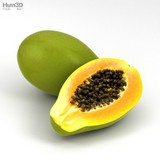

|  | The widely cultivated papaya (also called papaw or pawpaw), a tropical fruit plant. For the mountain papaya (Vasconcellea pubescens) of South America, see Mountain papaya. For the Eastern North American tree (and fruit) called "pawpaw", see Asimina triloba. For other uses, see Papaya (disambiguation). Not to be confused with Chaenomeles speciosa (flowering quince) or Pseudocydonia chinensis (Chinese quince), which like Carica papaya are sometimes called mugua. Papaya Papaya plant and fruit, from Koehler's Medicinal-Plants (1887) Papaya cross section showing orange flesh and numerous black seeds Scientific classification Kingdom: Plantae Clade: Tracheophytes Clade: Angiosperms Clade: Eudicots Clade: Rosids Order: Brassicales Family: Caricaceae Genus: Carica Species: C. papaya Binomial name Carica papaya The papaya (/pəˈpaɪə/, US: /pəˈpɑːjə/) (from Carib via Spanish), papaw (/pəˈpɔː/[2]) or pawpaw (/ˈpɔːpɔː/[2])[3] is the plant Carica papaya, one of the 22 accepted species in the genus Carica of the family Caricaceae.[4] Its origin is in the tropics of the Americas, perhaps from Central America and southern Mexico. |